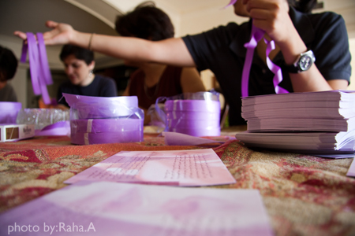
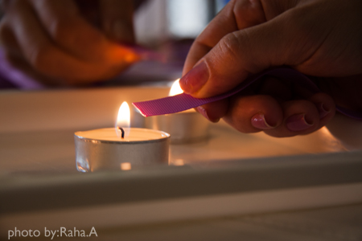
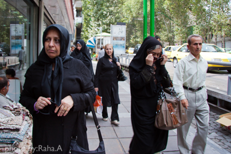
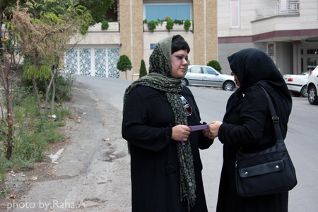
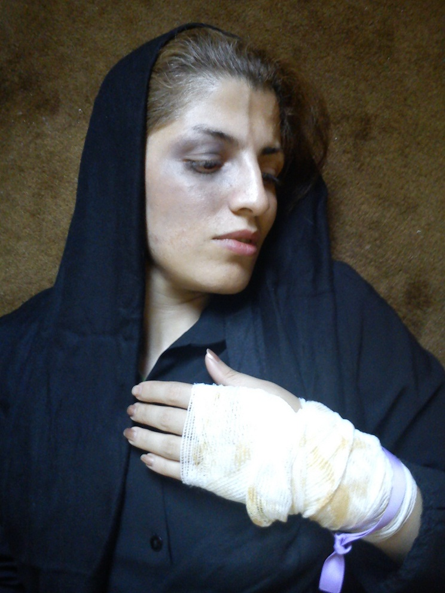
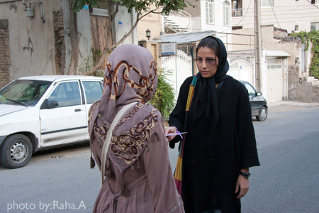

|
|

تلنگر خشونت در خیابانها
روایت فعالین حقوق زنان از حضور در خیابان در اعتراض به خشونت علیه زنان
چهار شنبه9 شهریور 1390
تغییر برای برابری: پنجم شهريور ماه تعدادي از فعالين جنبش زنان در راستاي آگاهي بخشي و جلب توجه مردم به پديده خشونت عليه زنان در حركتي نمادين به خيابانهاي شهر تهران آمدند. اين زنان كه ردي از خشونت بر چهره داشتند كارتهايي آويخته به نوار بنفش با تعريف و روايتي از خشونت را ميان مردم توزيع كردند. حركت مذكور در ادامه انتشار بيانيه تحليلي تعداي از فعالين حقوق زنان عليه خشونت انجام شد. در متن اين بيانيه كه به امضا هفتصد نفر از فعالين و نهادهاي مدني رسيده است بستن روبان بنفش نمادي از اعتراض به پديده خشونت عليه زنان است. مطلب زير روايت كوتاهي از تجربه شركت كنندگان در اين حركت و ثبت واكنشهاي مردم در برخورد با پديده خشونت است:

فرزانه
بعضي ها خيره و مبهوت نگاه مي كردند انگار باورشون نمي شد كه زني با اين صورت كبود سر و كله اش توي خيابون پيدا بشه و كبودي صورتش را پنهان نكند بعضي ها هم پس از يك بار ديدن مي خواستند كه ديگر نبينند و نگاهشان را به سمتي غير صورت من مشغول مي كردند وقتي مي رفتم روبه روي اونها قرار مي گرفتم انگار مي فهميدند كه من خجالتي از ديده شدن ندارم با تاسف تو نگاهشون با هام همدردي ميكردند يكي پرسيد آخه چرا؟! يكي گفت عينكتو بزن ديده نشه و بعد كارت را كه بهشون مي دادم با تعجب مي پرسيدن اين چيه و من كه وقتي براي توضيح نداشتم از كنارشون رد مي شدم.

ناهيد و آزاده
مردم اینقدر بی تفاوت بودن که فکر کردیم نمی خواهند وارد حریم خصوصی ما بشوند شايد هم چون مردم بالا شهر کارهای مهمتری دارند فرصت ايستادن و برانداز كردن صورت يك زن خشونت ديده را نداشتند!!!در این بین فقط دو نفر بودند که حساسیت مختصری از خود نشان داشتند. نزدیک امامزاده زنی در حال دعای روز بيست و هفتم ماه رمضان بود به محض برگشتن بطرف ما نگاهی کرد. کارت را بطرفش گرفتم نگاهی کرد و گفت خانم من دلش را ندارم . مورد بعد وارد چادر خانه امامزاده شدیم خانمی نگاهی کرد و گفت انشالله دستش بشکنه من برات دعا می کنم اما برو طلاق بگیر،گفتم بچه دارم باتاسف سرش را تکان داد.

مريم
زن ها و مردها از كنار دختر رد مي شدند زن ها نگاه هايشان را از روي صورت دختر بر نمي داشتند گويي نمي خواستند باور كنند دوباره برمي گشتند از پشت نگاه مي كردند تا شايد دختر خجالت زده نشود گاهي هم اخم ها و ابروهايشان توي هم مي رفت و آهي مي كشيدند اما وقتي به آنها توسط دختر كارت داده مي شد باز هم تعجب مي كردند . بعضي ها حس مادرانه داشتند و سعي مي كردند اين همه خشونت عريان نشود و مانند هميشه پنهان بماند سفارش و نصيحت مي كردند كه دخترم چشمانت را بپوشان تا ديده نشود همه چيز را كه مردم نبايد ببينند.

نوشين
از خیابان گرگان تا بهار را تنها آمدم با چشمي كبود ودستي باندپيچي شده. پانسمان دستم طوري بود كه ناخوآگاه احساس مي كردم نمي توانم در تاكسي را به راحتي باز كنم. سوار شدم جوری نشستم که تو آینه راننده باشم…. تو خیابون هم خودم به مردم زل می زدم که نگاه کنند بعضی ها که اتفاقی نگاهشون به صورتم می افتاد سریع روشون رو برمی گردوندن. تو خيابون بهار با دوست ديگري بودم كه واكنشهاي مردم رو بهتر ببينيم آنجا هم تقریبا همین اتفاق افتاد .یکی دو نفر پرسیدند این چیه؟ بعضی ها هم نمی خواستند بگیرن .مردم خیلی بی تفاوت بودند حالا اگه یه تیپ رنگی و اجق وجق زده بودیم حتما نگاه می کردن یا شاید هم هزارتا تیکه بهمون می انداختند. با اينحال با خودمان گفتيم كاش كارتهاي بيشتري داشتيم و ادامه مي داديم.

سميه
نگاه ها همه بهت زده بود به صورت کبود من. هیچ کس برگه ها را رد نمی کرد. خیابون خلوت بود. فقط به خانوم ها برگه دادم. همه در سکوت می گرفتندو وقتی برگشتم هیچی روی زمین نبود. هیچ کس برگه را نیانداخته بود. احساس خوبی داشتم و فقط فکر می کردم که کاش برگه بيشتري داشتم.

مريم
نگاه ها در منطقه جنوب غربي شهر (سلسبيل) خيلي تاسف آور بود . مردان خيلي بيشتر از ديدن چهره كبود دختر و قيافه غمگين و متاثر مي شدند و حتي تا لحظاتي نگاه هايشان را از روي او و حتي از پشت سرش برنمي داشتند و با تاسف سري هم تكان مي دادند. مردان جوان كه دستشان در دست زنانشان بود نگاهي به اين چهره مي انداختند ، دگرگون مي شدند و زير گوشي به زن جوان خود چيزي مي گفتند . مردان جوان كاسب و فروشندگان هم با نگاه هاي متحير اين چهره را دنبال مي كردند و بعضي ها مي گفتند دستش بشكنه بعضي ها هم مي گفتند كدام بي رحمي به اين روزت انداخته . زنان و دختران جوان با ديدن صورت كبود دختر نگاهشان را از روي ويترين مغازه ها برمي گرداندند و با حيرت به اين چهره خيره مي شدند و هنگامي كه مي خواستند سوال كنند برگه اي با روبان بنفش در دستشان بود و شروع به خواندن مي كردند.
این گزارش از صفحه فیس بوک بیانیه اعتراض به خشونت علیه زنان برداشته شده است. این صفحه و متن بیانیه رااینجا ببینید.